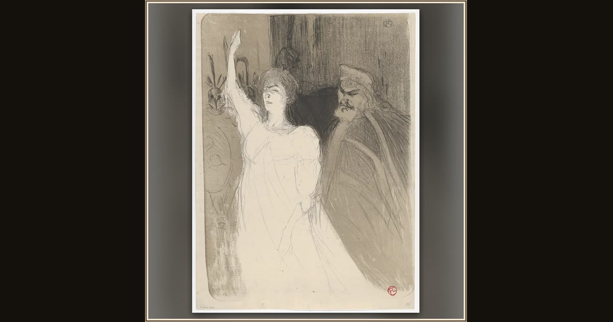

Bartet and Mounet-Sully, in Antigone
Henri de Toulouse-Lautrec · 1893 · met
The actors Bartet and Mounet-Sully in a staging of Antigone: she stands with arm raised beside a brooding bearded king, as Antigone defends the unwritten laws against Creon's edict (450). Explore its place in Sophocles's Plays, Antigone, line 428.